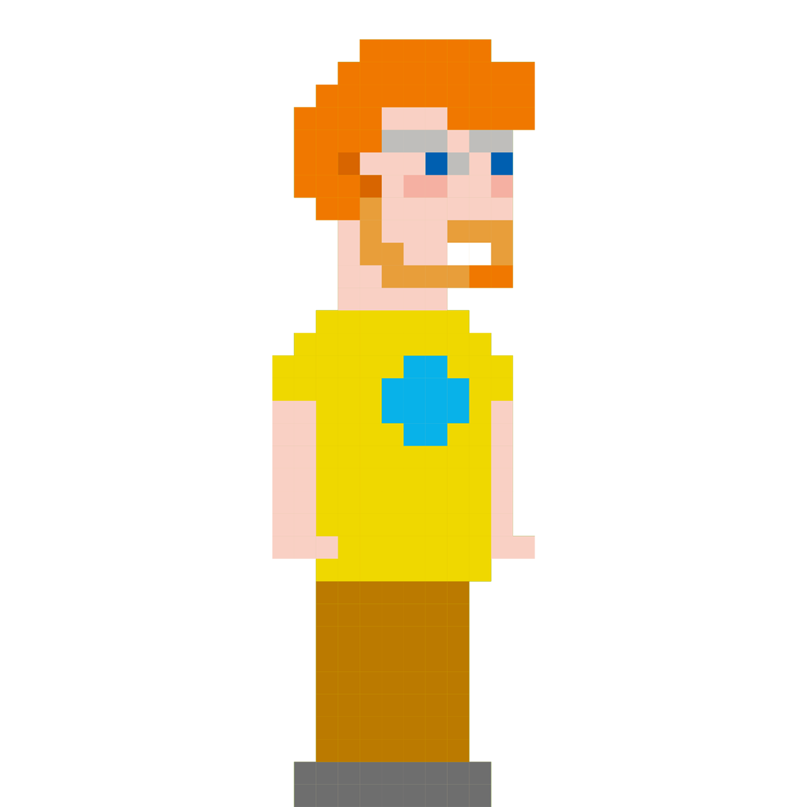
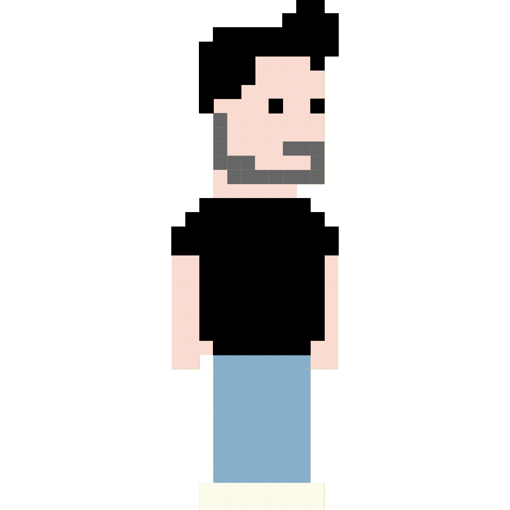

Desarrollo Ágil
presentado por Jordi Llull
Lorem fistrum benemeritaar jarl a gramenawer sexuarl al ataquerl mamaar la caidita ese pedazo de fistro por la gloria de mi madre. Qué dise usteer tiene musho peligro a wan pecador amatomaa está la cosa muy malar a peich diodeno va usté muy cargadoo mamaar. Apetecan quietooor papaar papaar de la pradera pupita llevame al sircoo no te digo trigo por no llamarte Rodrigor caballo blanco caballo negroorl te voy a borrar el cerito tiene musho peligro quietooor. Te va a hasé pupitaa diodenoo papaar papaar qué dise usteer ese pedazo de quietooor. A wan no puedor a gramenawer amatomaa.
Git & Docker
presentado por Hugo Chinchilla
Problemas que soluciona
- compartir código
- revisión y auditoría del código
- backups
- integración de cambios producidos en paralelo
en 6 slides
Para iniciar un repositorio
puedesCrear un nuevo repositorio
$ cd projects/foo
$ git init
Clonar un repositorio
$ git clone https://github.com/habitissimo/labs-2016-07-01.git
workflow
Tu repositorio local consite en 3 "árboles". El primero es tu
directorio de trabajo, que contiene los ficheros, el segundo
Index, que sirve como área de ensayo. Y HEAD
que apunta a tu último commit
 Image from http://rogerdudler.github.io/git-guide/
Image from http://rogerdudler.github.io/git-guide/
add
Cuando modificas un fichero solo estás cambiando su estado dentro de tu directorio de trabajo
Puedes pasarlos a tu Index haciendo:
$ git add <nombre de fichero>
commit
Cuando tus cambios sean definitivos y quieras guardarlos harás un
commit
$ git commit -m "Mensaje del commit"
push
Ahora tus cambios se han guardado de forma segura en tu repositorio, pero solo en tu copia local.
Para exportar tus cambios y ponerlos al alcance de otros desarrolladores deberás compartirlos con el repositorio remoto.
$ git push
ramas
Las ramas se usan para desarrollar funcionalidades de manera aislada. La rama master es la rama "por defecto" cuando creas un repositorio. Crea nuevas ramas durante el desarrollo y fusiónalas con la rama principal cuando termines.
 Image from http://rogerdudler.github.io/git-guide/
Image from http://rogerdudler.github.io/git-guide/
Más detalles en git - the simple guide http://rogerdudler.github.io/git-guide
Problemas que soluciona
- compartir entornos de trabajo
- gestión de dependencias
- ocultar detalles específicos
- desplieges a producción
Ejemplo:
Vamos a crear una aplicación web
Dependencias:
- PHP
- MySQL
- ImageMagick
- Exim
- Redis
- Beanstalkd
Mantener un entorno de desarrollo al día en lás máquinas de cada desarrollador puede ser muy complicado
Diferentes sistemas operativos, diferentes versiones de los mismos...
FROM ubuntu:xenial
RUN apt-get update -y && apt-get install apache2 libapache2-mod-php
ADD apache.con /etc/apache2/apache.conf
CMD ["apache2", "-DFOREGROUND"]
Este fichero crea una imagen de ubuntu, sobre la que instala apache2, php y añade un archivo de configuración propio para apache.
El contenedor resultante se puede ejecutar sobre cualquier linux, independientemente de la distribución (debian, redhat, arch, gentoo...) también sobre OSx y Windows mediante boot2docker.
Docker-compose
Define los contenedores que forman el entorno de desarrollo, las relaciones entre ellos y las versiones requeridas de cada uno.
Crea un flujo de trabajo único para iniciar el entorno de cualquier proyecto, independientemente de las tecnologías que lo componen.
$ docker-compose up
Anatomía de un entorno de desarrollo
# docker-compose.yml
web:
image: habitissimo/apache:2.2.4
ports:
- "5000:5000"
volumes:
- .:/code
links:
- redis
redis:
image: redis:3.1